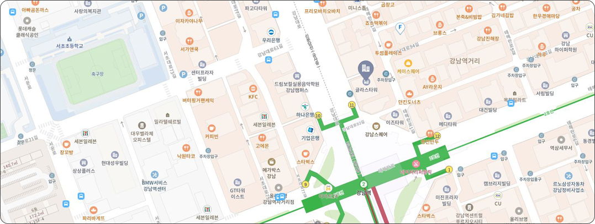

녹차와 홍차의 만남.
바쁜 일상 속 차 한잔으로 여유를 제공합니다.
'녹차'를 소개합니다.
삼국시대부터 마시기 시작햇다는 녹차. 녹차는 찻잎을 따는 시기와 찻잎의 크기, 생산지에 따라 분류됩니다.
녹차는 뉴욕타임스가 세계 10대 건강식푼으로 선정하기도 했는데요. 녹차에는 항산화 성분이풍부하게
함유되어 있어 각종 질환을 예방하는데 긍정적인 효과를 주는 것으로 알려져 있습니다.
'홍차'를 소개합니다.
세계적으로 가장 대중적인 음료 중 하나인 홍차는 이를 물처럼 마시는 나라가 있고, 귀한 손님에게
대접하기도 합니다. 홍차는 맛이 농후하고 풍미가 진한 것이 특징으로 지역과
제조 방법에 따라 섬세하게 분류되며 홍차의 종류만 해도 수십여 가지로 정말 다양하며
홍차 고유의 향미가 매력적입니다.
차 한잔의 여유는 녹차와 홍차를 다양한 방법으로 가공하여 제공 합니다.
One's Tea is our motto for a rest with cup of tea.
We offer tea so that you can spend your time warmly and comfortably by drinking a cup of tea in the daily life of the general public.
It mainly deals with'green tea' and'black tea', which are well known to the public.
It provides a way to look at the two teas in various ways, and also operates classes to learn traditional tea ceremony.
저희 One's Tea는 차 한잔의 여유를 모토로
일반인들의 지치고 힘든 일상 속 차 한잔을 마심으로써 찰나의 시간을 따뜻하고 편안하게 보낼 수 있도록 차를 제공합니다.
대중에게 잘 알려진 '녹차'와 '홍차'를 주로 다루며
두 가지 차를 다양한 방법으로 우려 볼 수 있도록 방법을 제공하며 또한 클래스를 운영하여 전통다도를 배워볼 수 있도록 운영합니다.
홍차에는 대중적으로 알려진 아쌈, 엘그레이부터 잘 알려지지 않은
레이디그레이, 누왈라엘리야까지 아주 다양한 종류가 있으며
가향법에 따라 종류 안에서도 또다시 차의 맛이 변합니다.
이 클래스에서는 각각의 차를 직접 다양한 방법으로 내려 시음해보며
나에게 맞는 홍차를 찾아가는 수업입니다.
녹차, 홍차를 비롯하여 각 차에는 가장 알맞는 차 우리는 방법이 있다는 것
알고계신가요?
차는 물의 온도, 물의 양, 우리는 시간과 어떤 찻잔을 사용하는지에
따라 차 맛이 다르답니다.
이 클래스에서는 녹차를 사용하여
전통다도부터 일반적으로 많이 사용하는 간단한 티백까지
다양한 방법으로차를 우려 보는 수업입니다.
2가지의 클래스를 경험해 볼 수 있습니다.
유튜브 채널 : '한국티소믈리에연구원 TV'님
- 채널 소개 -
대한민국 No.1 티 소믈리에, 티블렌딩
대한민국 대표 티 전문 교육 연구기관입니다.
'One's Tea' is a place for people who are busy life.
If you want to have a fun tea story and a little healing, please come.
'One's Tea'는 언제나 휴식이 필요한 분들을 기다리고 있습니다.
차에 관심이 있으시거나 너무 바쁜 일상에 지쳤다면
잠깐의 휴식을 위해 방문 하세요.
언제나 환영합니다.
T.02-123-4567
Open 09:00 / Close 18:00

- 오시는 길 -
버스 : 100, 101 , 200-1 (강남역 하차 11번 출구로 이동)
지하철 : 2호선 (강남역 하차 11번 출구로 이동)